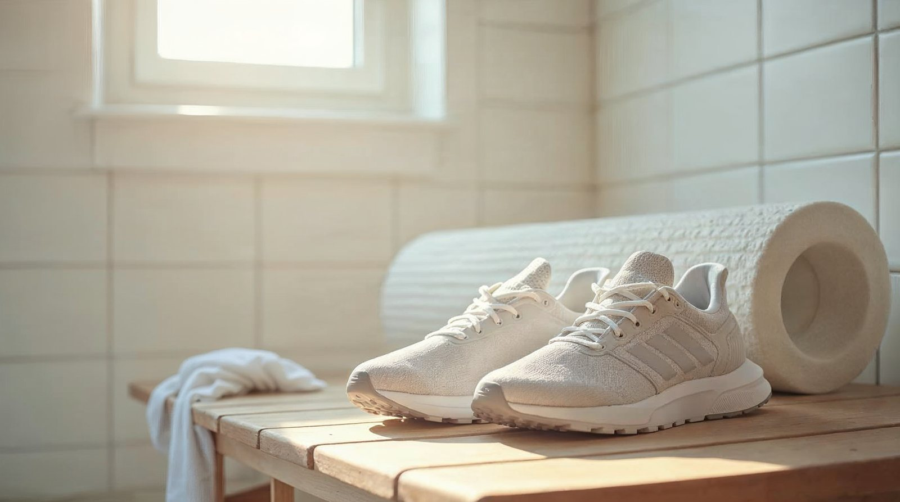
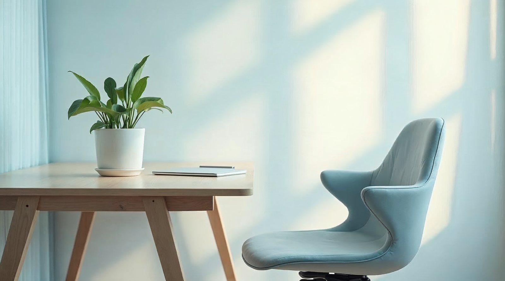
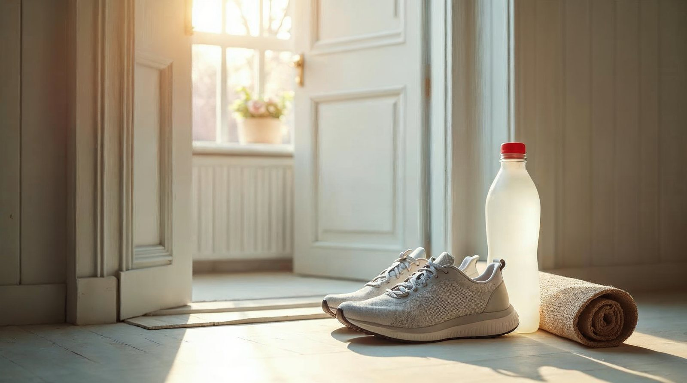
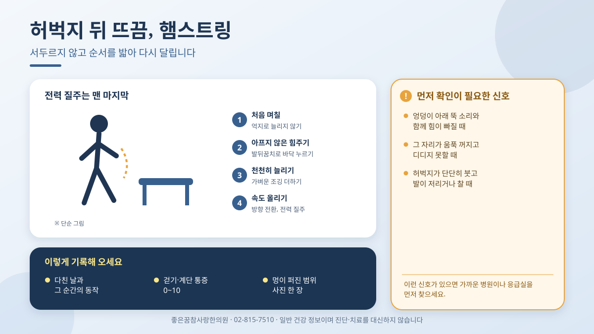

이종호 한의사 감수좋은꿈참사랑한의원 대표원장 (한의사 면허번호 19769)발행 2026-11-26 · 수정 2026-11-26
이 글의 차례
일요일 아침 조기축구, 공을 따라 전력으로 달려 나가던 순간 허벅지 뒤가 '뜨끔' 합니다. 누가 뒤에서 돌을 던진 것 같다고 표현하시는 분도 있습니다. 그 자리에서 멈춰 서고, 절뚝이며 벤치로 나옵니다. 집에 와서 보니 걷는 것은 되는데 다리를 앞으로 뻗기가 겁납니다.
진료실에서 이런 이야기를 들으면 저는 그 순간을 자세히 여쭙니다. 달리고 있었는지, 공을 차는 중이었는지, 다리를 높이 찼는지, 뚝 하는 소리가 났는지, 바로 멈출 수밖에 없었는지요. 그 순간의 모습이 손상의 정도와 다음 걸음을 가늠하는 첫 단서가 되기 때문입니다.
허벅지 뒤쪽 근육 묶음을 햄스트링이라고 부릅니다. 이 근육이 갑자기 늘어나면서 힘을 쓰다가 다치는 일이 운동하는 분들 사이에서 무척 흔합니다. 가볍게 당긴 정도부터 근육 일부가 찢어진 경우, 드물게는 힘줄이 뼈에서 떨어진 경우까지 범위가 넓습니다.
이 글에서는 햄스트링이 하는 일, 왜 다치는지, 정도를 어떻게 가늠하는지, 처음 며칠과 그 뒤를 어떻게 지내는지, 다시 달리기까지 어떤 순서로 가는지, 한의원에서는 무엇을 함께 살피는지를 차례로 말씀드리겠습니다.

햄스트링은 어떤 일을 하나요
햄스트링은 엉덩이 아래 앉을 때 닿는 뼈에서 시작해 허벅지 뒤를 지나 무릎 아래 안쪽과 바깥쪽에 붙는 세 개의 근육입니다. 엉덩이 관절과 무릎 관절을 동시에 지나기 때문에 두 관절을 함께 움직입니다.
걷고 달릴 때 햄스트링은 다리를 뒤로 미는 힘을 내고, 앞으로 뻗은 다리가 너무 멀리 나가지 않도록 붙잡는 브레이크 역할도 합니다. 특히 달리기에서 발이 땅에 닿기 직전, 쭉 뻗은 다리를 감속시키는 순간에 근육이 늘어난 채로 가장 세게 힘을 씁니다.
이렇게 늘어나면서 힘을 쓰는 순간이 햄스트링이 가장 다치기 쉬운 때입니다. 전력 질주, 공 차기, 높이 차기, 다리 찢기처럼 근육이 길게 늘어나면서 큰 힘이 걸리는 동작에서 손상이 많이 생깁니다.
왜 허벅지 뒤가 갑자기 다칠까요
가장 흔한 계기는 충분히 몸을 풀지 않은 상태에서의 전력 질주입니다. 아침 일찍, 추운 날, 오랜만에 하는 경기처럼 근육이 아직 데워지지 않은 상태에서 갑자기 속도를 내면 근육이 늘어나는 속도를 따라가지 못합니다.
피로도 큰 몫을 합니다. 경기 후반, 오래 달린 뒤처럼 근육이 지쳐 있을 때 손상이 더 잘 생깁니다. 지친 근육은 브레이크 역할을 제대로 해내지 못해 같은 동작에서도 부담이 커집니다.
몸의 조건도 함께 봅니다. 예전에 같은 자리를 다친 적이 있거나, 허벅지 앞 근육에 비해 뒤 근육이 약하거나, 엉덩이 근육과 몸통이 약해 햄스트링이 혼자 일을 떠맡는 분은 다시 다치기 쉽습니다. 오래 앉아 지내 허벅지 뒤가 짧아진 분도 마찬가지입니다.
그래서 햄스트링 손상은 한 번 다친 뒤 같은 자리를 다시 다치는 일이 흔한 편입니다. 처음 다쳤을 때 회복 순서를 차근차근 밟는 것이 다음 손상을 줄이는 길이기도 합니다.
얼마나 다쳤는지는 어떻게 가늠하나요
정확한 정도는 진찰과 필요에 따른 영상 검사로 판단하지만, 집에서도 대략의 방향은 가늠할 수 있습니다.
- 뻐근하게 당기지만 걷기와 계단이 거의 불편하지 않다: 가볍게 당긴 쪽을 생각합니다
- 뜨끔한 뒤 절뚝이고, 다리를 쭉 펴서 들어 올리기가 어렵다: 근육 일부 손상을 함께 생각합니다
- 며칠 뒤 허벅지 뒤나 무릎 뒤로 멍이 넓게 내려온다: 근육 안에서 출혈이 있었다는 신호일 수 있습니다
- 엉덩이 아래쪽에서 뚝 소리와 함께 힘이 빠지고 그 자리가 움푹하다: 힘줄이 뼈에서 떨어졌을 가능성을 먼저 확인해야 합니다
멍은 다친 날보다 이삼일 뒤에 더 넓게 보이는 경우가 많아 놀라시는 분이 많습니다. 피가 중력을 따라 아래로 내려오면서 무릎 뒤나 종아리 쪽까지 퍼지기도 합니다. 멍 자체보다 걷기와 힘이 어떤지가 더 중요한 기준입니다.
처음 며칠은 어떻게 지내나요
다친 직후에는 더 다치지 않도록 하는 것이 먼저입니다. 그날 운동은 바로 멈추고, 아픈 다리로 뛰거나 억지로 스트레칭하지 않습니다. 다친 근육을 당겨 늘리면 손상이 커질 수 있습니다.
처음 이삼일은 열감과 붓기가 있으면 얇은 수건으로 감싼 차가운 찜질을 10~15분씩 하루 몇 번 대 줍니다. 압박 붕대를 너무 세지 않게 감거나, 앉고 누울 때 다리를 조금 올려 두는 것도 붓기를 덜어 줍니다.
걷기는 통증이 크지 않은 범위에서 보폭을 줄여 이어 갑니다. 완전히 누워만 지내기보다 짧고 편한 걸음으로 일상을 이어 가는 편이 근육 회복에 도움이 되는 경우가 많습니다. 절뚝임이 심하다면 걷는 양을 줄이고 진찰을 먼저 받아 보세요.
다친 직후 뜨거운 목욕, 사우나, 음주는 붓기를 키울 수 있어 처음 며칠은 피하시길 권합니다.
다시 달리기까지는 어떤 순서로 가나요
햄스트링 회복은 대개 걷기, 가벼운 힘주기, 늘리기, 빠른 움직임 순서로 나아갑니다. 각 단계는 통증과 다음 날 상태를 기준으로 넘어갑니다.
첫 단계는 편하게 걷기와 아프지 않은 범위에서 근육에 힘을 주는 운동입니다. 누워서 무릎을 세우고 발뒤꿈치로 바닥을 살짝 누르며 몇 초 버티기, 엉덩이 들어 올리기 같은 동작부터 시작합니다. 이 단계에서 근육을 억지로 늘리지는 않습니다.
걷기가 편해지고 힘주기가 아프지 않으면 천천히 늘리는 동작과 가벼운 조깅을 더합니다. 그다음 속도를 조금씩 올린 달리기, 방향 바꾸기, 마지막에 전력 질주와 공 차기로 돌아갑니다. 전력 질주는 맨 마지막 단계라는 점을 기억해 주세요.
다시 뛰기 전에 양쪽 허벅지 뒤의 힘과 유연성이 비슷해졌는지 확인하는 것이 좋습니다. 아픈 쪽이 확연히 약한 상태로 경기에 복귀하면 같은 자리를 다시 다치기 쉽습니다.
같은 자리를 다시 다치지 않으려면 무엇을 챙기나요
햄스트링을 한 번 다친 분은 같은 자리를 다시 다치는 일이 적지 않습니다. 통증이 사라진 것과 근육이 원래 힘을 되찾은 것 사이에는 시간 차이가 있기 때문입니다. 아프지 않다고 해서 준비가 끝난 것은 아닙니다.
다시 다치는 것을 줄이는 데 가장 많이 이야기되는 것은 허벅지 뒤 근육이 늘어나면서 힘을 쓰는 능력을 기르는 운동입니다. 무릎을 꿇고 앉아 몸을 앞으로 천천히 기울이며 허벅지 뒤로 버티는 동작이 대표적인데, 부담이 큰 편이라 회복 후반에 진찰을 받고 시작하시길 권합니다.
엉덩이 근육과 몸통 근육도 함께 챙깁니다. 엉덩이가 제 몫을 하면 햄스트링이 혼자 떠맡는 일이 줄어듭니다. 그리고 경기 후반처럼 지친 상태에서 전력 질주를 줄이는 것, 운동 전 준비운동을 충분히 하는 것도 작지만 중요한 습관입니다.
집에서 해 볼 수 있는 간단한 확인
통증이 크게 올라오면 바로 멈추고, 다친 직후 며칠은 이 확인도 건너뛰세요.
- 등을 대고 누워 무릎을 편 채 다리를 들어 올릴 때 양쪽 높이 차이
- 엎드려 무릎을 천천히 굽힐 때 허벅지 뒤 통증과 힘의 차이
- 엉덩이 들어 올리기를 양쪽으로 번갈아 할 때의 차이
- 계단을 오를 때와 내려갈 때 어느 쪽이 더 불편한지
다리를 들어 올린 높이는 휴대폰으로 옆에서 사진을 찍어 두면 일주일 뒤와 비교하기 쉽습니다.

오래 앉아 지내는 분의 허벅지 뒤
햄스트링은 운동선수만의 이야기가 아닙니다. 오래 앉아 일하는 분은 허벅지 뒤가 짧고 굳은 상태로 지내다가, 주말에 갑자기 등산이나 축구, 아이와 뛰어놀기를 하며 다치는 경우가 많습니다.
평소에 앉아 지내는 시간이 길다면 한 시간에 한 번 일어나 몇 걸음 걷고, 의자에 앉은 채 한쪽 다리를 앞으로 뻗어 발끝을 몸 쪽으로 당기며 허벅지 뒤를 가볍게 늘려 주세요. 짧은 움직임이라도 하루에 여러 번 모이면 근육이 덜 굳습니다. 퇴근길에 한 정거장 먼저 내려 걷는 것처럼 일상 속 걸음을 늘리는 것도 좋은 준비가 됩니다.
주말 운동 전에는 평소보다 준비운동을 길게 하시길 권합니다. 가볍게 걷다가 조깅으로, 조깅에서 다리 앞뒤로 흔들기와 가벼운 무릎 올리기로 몸을 데운 뒤 속도를 올리면 근육이 늘어나는 속도를 따라가기 한결 수월합니다.
먼저 이렇게 여쭙니다
처음 오시면 대략 이런 순서로 여쭙니다. 미리 떠올려 오시면 이야기가 훨씬 수월해집니다.
- 다친 순간 어떤 동작을 하고 있었고, 소리나 뚝 하는 느낌이 있었나요?
- 그 자리에서 바로 멈췄나요, 조금 더 뛸 수 있었나요?
- 지금 걷기, 계단, 앉았다 일어서기는 어떤가요?
- 멍이 생겼다면 어디까지 내려왔나요?
- 예전에 같은 자리를 다친 적이 있나요?
- 드시는 약, 특히 피를 묽게 하는 약이 있나요?
피를 묽게 하는 약을 드시는 분은 멍이 넓게 생기기 쉽고, 침 치료 방법을 정할 때도 고려해야 합니다. 처음에 꼭 알려 주시고, 처방받은 약은 처방한 선생님과 상의 없이 끊지 않습니다.
일상에서 먼저 해 볼 수 있는 것
- 다친 직후 며칠은 억지로 늘리지 않고 편한 걸음으로 걷기
- 열감이 있으면 얇은 수건으로 감싼 차가운 찜질, 열감이 가라앉으면 따뜻한 찜질로 바꾸기
- 누워서 발뒤꿈치로 바닥 누르며 버티기처럼 아프지 않은 힘주기
- 엉덩이 들어 올리기로 엉덩이 근육을 함께 깨우기
- 오래 앉을 때는 한 시간에 한 번 일어나기
- 운동을 다시 시작할 때는 준비운동을 평소보다 길게
찜질을 차갑게 할지 따뜻하게 할지 헷갈리실 때는 열감을 기준으로 삼으세요. 만졌을 때 반대쪽보다 뜨겁고 붓기가 있다면 차갑게, 열감이 가라앉고 뻣뻣함만 남았다면 따뜻하게 하는 편이 대개 편안합니다.
한의원에서 함께 살필 수 있는 경우
- 다친 뒤 걷기는 되지만 허벅지 뒤 당김과 통증이 이어지는 경우
- 멍과 붓기가 가라앉은 뒤에도 근육이 뭉치고 뻣뻣한 경우
- 같은 자리를 여러 번 다쳐 다시 뛰기가 걱정되는 경우
- 허리와 엉덩이까지 함께 뻐근해 어디서 오는지 헷갈리는 경우
- 운동 복귀 순서와 양을 함께 정하고 싶은 경우
좋은꿈참사랑한의원에 오시면 먼저 아래 '먼저 확인이 필요한' 신호가 없는지부터 봅니다. 그다음 허벅지 뒤와 엉덩이, 허리를 함께 만져 보고, 다리를 들어 올리는 범위와 무릎을 굽히는 힘을 양쪽으로 비교합니다. 허리에서 내려오는 저림이 섞여 있는지도 함께 살핍니다.
진찰한 내용을 바탕으로 침이나 약침, 온열 관리, 회복 단계에 맞는 운동 지도 가운데 지금 상태에 맞는 것을 정합니다. 한약은 회복이 더디고 피로가 함께 쌓였을 때 드시는 약을 확인한 뒤 신중히 상의합니다.
이렇게 기록해 오시면 상담이 쉬워집니다
- 다친 날과 다친 순간의 동작
- 매일 걷기와 계단 통증을 0~10으로
- 멍이 퍼진 범위와 사라진 날
- 누워서 다리를 편 채 들어 올린 높이(반대쪽과 비교)
- 해 본 운동과 다음 날 아침 상태
휴대폰으로 멍의 모습을 하루 한 번 찍어 두시면 진료실에서 흐름을 보는 데 큰 도움이 됩니다.
빠진 날이 있어도 괜찮습니다. 기록을 나란히 놓고 보면 어떤 운동 뒤에 당김이 올라오는지, 쉬는 날이 있으면 얼마나 가라앉는지가 보이고, 그것이 다음 단계로 넘어갈 시점을 정하는 실마리가 됩니다.

다시 뛰는 날을 위해
햄스트링 손상은 서두르면 다시 다치기 쉽고, 순서를 밟으면 다시 뛸 수 있는 경우가 많은 손상입니다. 다친 다리를 원망하기보다, 이번 기회에 준비운동과 엉덩이·허벅지 뒤 근력을 챙기는 습관을 만든다고 생각해 주시면 좋겠습니다.
이번 주에는 편한 걸음으로 걷기와 누워서 버티기, 이 두 가지만 해 보세요. 다음에 오시면 기록을 함께 보며 다음 단계를 정하겠습니다.
이런 증상은 먼저 확인이 필요합니다
- 엉덩이 아래쪽에서 뚝 소리와 함께 힘이 빠지고 그 자리가 움푹 꺼지거나 다리를 거의 디디지 못하는 경우
- 허벅지가 단단하게 부풀며 점점 더 심하게 아프고 발이 저리거나 차가워지는 경우
이런 신호가 있으면 한의원보다 가까운 병원이나 응급실을 먼저 찾으세요.
함께 읽으면 좋은 글
- 허벅지 앞을 세게 부딪혔거나 공을 차다 뜨끔했을 때, 허벅지 앞 근육 타박·파열은 어떻게 살피나요?
- 요가를 하다가 허벅지 뒤와 엉덩이가 당기는 것은 어떻게 살피나요?
- 마라톤이나 장거리 달리기를 마친 뒤, 며칠 동안 몸 회복은 어떻게 살피나요?
- 운동하고 이틀째에 더 쑤시는 지연성 근육통은 왜 생기고, 회복은 어떻게 살피나요?
- 운동을 꾸준히 하는 분은 진료 전에 무엇을 알려야 하나요?

여쭙는 것
- 다친 순간 어떤 동작을 하고 있었고, 소리나 뚝 하는 느낌이 있었나요?
- 그 자리에서 바로 멈췄나요, 조금 더 뛸 수 있었나요?
- 지금 걷기, 계단, 앉았다 일어서기는 어떤가요?
생활에서 해 볼 것
- 다친 직후 며칠은 억지로 늘리지 않고 편한 걸음으로 걷기
- 열감이 있으면 얇은 수건으로 감싼 차가운 찜질, 열감이 가라앉으면 따뜻한 찜질로 바꾸기
- 누워서 발뒤꿈치로 바닥 누르며 버티기처럼 아프지 않은 힘주기
한의원에서 함께 살필 것
- 다친 뒤 걷기는 되지만 허벅지 뒤 당김과 통증이 이어지는 경우
- 멍과 붓기가 가라앉은 뒤에도 근육이 뭉치고 뻣뻣한 경우
- 같은 자리를 여러 번 다쳐 다시 뛰기가 걱정되는 경우
먼저 확인이 필요한 신호
- 엉덩이 아래쪽에서 뚝 소리와 함께 힘이 빠지고 그 자리가 움푹 꺼지거나 다리를 거의…
- 허벅지가 단단하게 부풀며 점점 더 심하게 아프고 발이 저리거나 차가워지는 경우
한눈에 보는 표
| 구분 | 핵심 |
|---|---|
| 여쭙는 것 | 다친 순간 어떤 동작을 하고 있었고, 소리나 뚝 하는 느낌이 있었나요? 그 자리에서 바로 멈췄나요, 조금 더 뛸 수 있었나요? |
| 생활에서 해 볼 것 | 다친 직후 며칠은 억지로 늘리지 않고 편한 걸음으로 걷기 열감이 있으면 얇은 수건으로 감싼 차가운 찜질, 열감이 가라앉으면 따뜻한 찜질로 바꾸기 |
| 한의원에서 함께 살필 것 | 다친 뒤 걷기는 되지만 허벅지 뒤 당김과 통증이 이어지는 경우 멍과 붓기가 가라앉은 뒤에도 근육이 뭉치고 뻣뻣한 경우 |
| 먼저 확인이 필요한 신호 | 엉덩이 아래쪽에서 뚝 소리와 함께 힘이 빠지고 그 자리가 움푹 꺼지거나 다리를 거의 디디지 못하는 경우 허벅지가 단단하게 부풀며 점점 더 심하게 아프고 발이 저리거나 차가워지는 경우 |
자주 묻는 질문
다친 다음 날 스트레칭을 해서 풀어 줘도 되나요?
다친 직후 며칠은 근육을 억지로 늘리지 않는 것이 좋습니다. 통증이 가라앉고 걷기가 편해진 뒤 아프지 않은 범위에서 천천히 늘리는 동작을 더해 가세요.
멍이 무릎 뒤까지 내려왔는데 괜찮은가요?
근육 안의 피가 아래로 내려오면서 다친 자리보다 낮은 곳에 멍이 보이는 경우가 흔합니다. 다만 다리가 단단하게 부풀고 점점 더 아프거나 발이 저리면 바로 병원 진료를 받으세요.
다친 지 며칠 만에 침을 맞아도 되나요?
진찰로 다친 정도와 멍, 붓기를 확인한 뒤 시기와 방법을 정합니다. 피를 묽게 하는 약을 드신다면 처음에 꼭 알려 주세요.
다시 축구를 해도 되는 때는 어떻게 아나요?
걷기와 조깅이 편하고, 양쪽 허벅지 뒤의 힘과 유연성이 비슷해졌으며, 점점 빠르게 달려도 다음 날 아침 불편이 없을 때를 기준으로 삼습니다. 전력 질주는 맨 마지막에 더합니다.
테이핑을 하면 다시 다치지 않나요?
테이핑은 불편을 덜어 주는 데 쓰일 수 있지만 다시 다치는 것을 막아 주는 장치로 보기는 어렵습니다. 준비운동과 근력 회복을 함께 챙기는 것이 중요합니다.
좋은꿈참사랑한의원은 재진 때 지난번 이야기부터 이어서 여쭙니다. 진료시간과 예약은 오시는 길에서 확인하세요.
어디서 상담받을 수 있나요?
좋은꿈참사랑한의원은 서울 동작구 만양로2길 2 신성빌딩 3층·5층(서울 동작구 상도동, 7호선 상도역 3번 출구 근처)에 있습니다. 한의사 3명(이종호 대표원장, 조영기 수석진료원장, 정원영 진료원장)이 진료합니다. 진료시간은 평일 09:30~20:00(점심 13:00~14:00), 토·일·공휴일 09:30~15:00이며, 방문 전 전화로 확인을 권합니다. 예약은 네이버 예약, 카카오톡 상담, 전화 02-815-7510로 받습니다.
이 글은 일반적인 건강 정보이며 개인의 진단이나 치료를 대신하지 않습니다. 증상이 있거나 복용 중인 약이 있다면 진료를 통해 확인하세요. 치료 효과는 개인마다 다를 수 있습니다.
작성 기준: 일반적으로 알려져 있는 건강 정보를 참고해 정리했습니다(대표원장 감수). 증상 기록은 1~2주 동안 하루 1회, 비슷한 시간에 적어 오시면 지난 상태와 비교하기 쉽습니다.